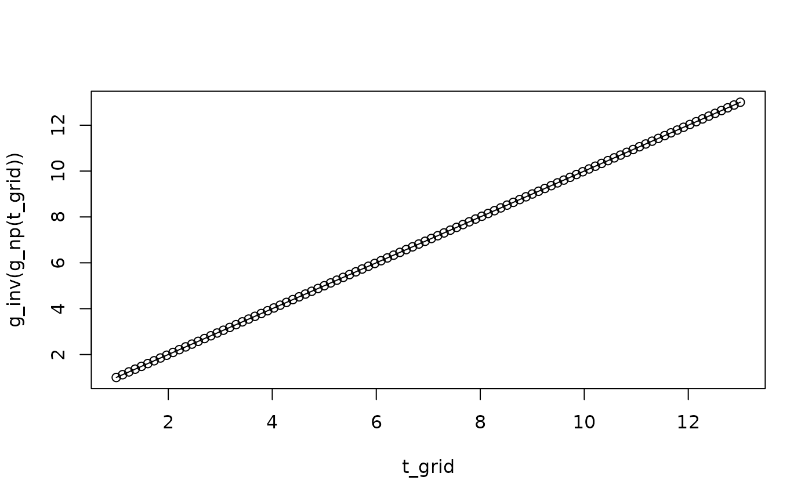

Compute the inverse function of a transformation g based on a grid search.
Value
A function which can be used for evaluations of the (approximate) inverse transformation function.
Examples
# Sample some data:
y = rpois(n = 500, lambda = 5)
# Empirical CDF transformation:
g_np = g_cdf(y, distribution = 'np')
# Grid for approximation:
t_grid = seq(1, max(y), length.out = 100)
# Approximate inverse:
g_inv = g_inv_approx(g = g_np, t_grid = t_grid)
# Check the approximation:
plot(t_grid, g_inv(g_np(t_grid)), type='p')
lines(t_grid, t_grid)
